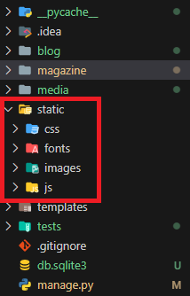

In project root go to settings.py
Add those lines
STATIC_URL = 'static/'
STATICFILES_DIRS = [
    BASE_DIR / "static",
]
STATIC_ROOT = BASE_DIR / "staticfiles"


Create static folder that will contain your css, js, images and fonts.
It should be in same level with project root.


If you will use css, js, images or fonts you should insert the following line at the top of html file in each file that includes static stuff.
{% load static %}